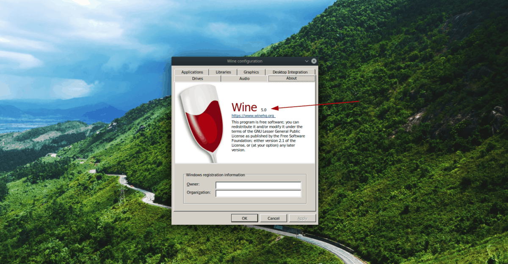
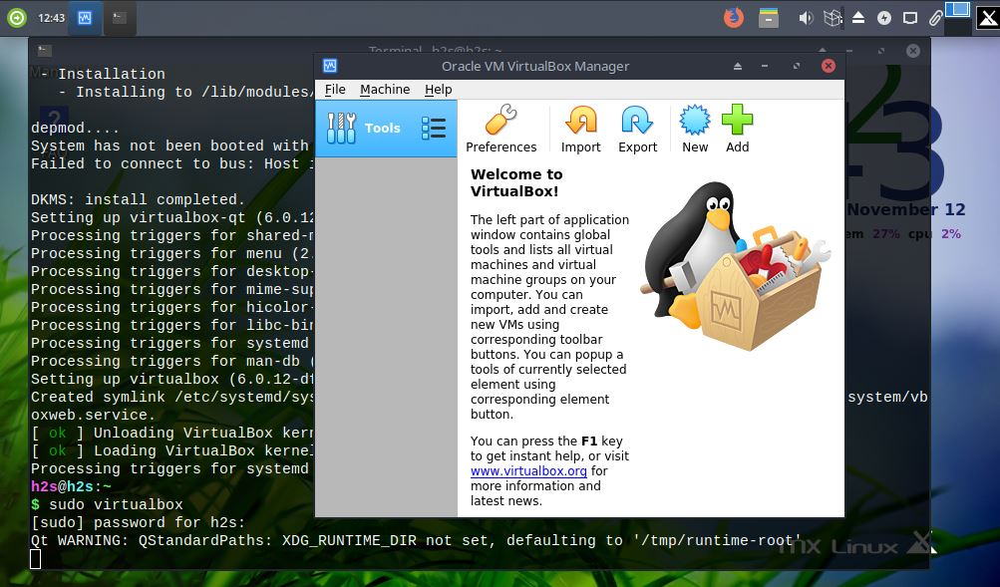
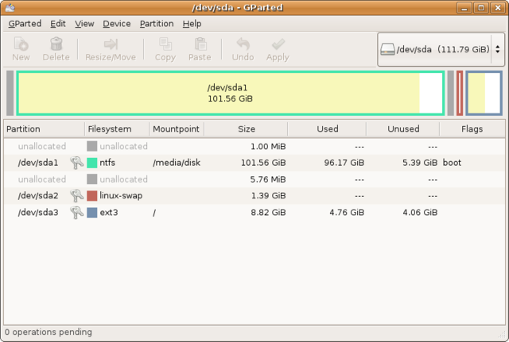
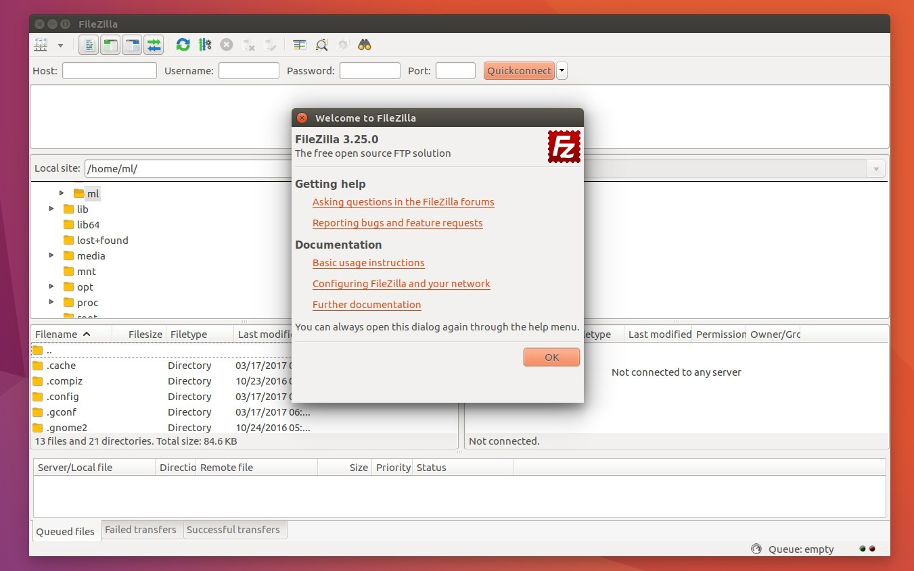
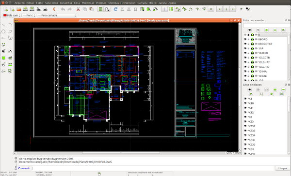

Diversos programas para linux
Wine é uma camada de compatibilidade para sistemas operativos UNIX que tem como objetivo a implementação da API da Microsoft Windows, sendo liderada por Alexandre Julliard. Desta forma, em teoria, o Wine permite a execução de aplicações desenvolvidas para ambientes Windows nativamente em outros sistemas operacionais
Virtualbox é um software de virtualização (que executa programas como um computador real) que desde 2009 teve sua licença adquirida pela Oracle. Atualmente é mantida sobre a licença GPL (Licença Pública Geral) e é compatível com os sistemas operacionais: Linux , macOS, Windows e Solaris.
GParted é o aplicativo GNOME para edição de partições. Suas funções são as de detectar, ler, criar, destruir, redimensionar, verificar, mover e copiar partições e seus sistemas de arquivos
FileZilla é um cliente FTP, SFTP e FTPS de código livre para Microsoft Windows e GNU/Linux. É distribuído em licença GNU General Public License. Desde 1 de março de 2007 ocupa a 9ª posição na lista dos mais baixados do SourceForge, desbancando nomes como phpBB, Pidgin e MinGW
LibreCAD é uma aplicação de desenho assistido por computador, ou Computer Aided Design, livre para o projetos em 2D. Ele funciona em GNU/Linux, Mac OS X, Unix e sistemas operacionais Microsoft Windows. LibreCAD foi desenvolvido como uma bifurcação do QCad Community Edition.
